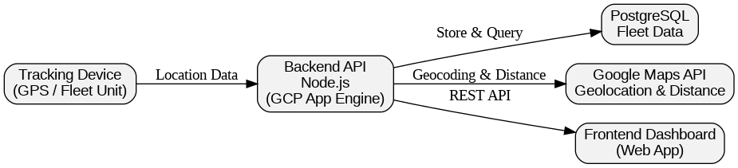

Tracktion — Fleet Management System
Backend system for tracking logistics fleet assets

Project Overview
Tracktion is a fleet management system developed for a logistics company that required a digital solution to monitor and manage their truck assets. The main objective of this project was to provide real-time visibility into fleet locations and operational movement through a centralized system.
Business Problem
The client previously relied on manual tracking and fragmented tools to monitor fleet operations, making it difficult to understand asset utilization, delivery routes, and operational efficiency. They needed a backend system capable of processing location data, transforming it into meaningful geographic insights, and serving this information reliably to a frontend dashboard.
Technical Challenges
- Processing and managing continuous geolocation data from fleet tracking devices
- Translating raw latitude and longitude into readable location information
- Calculating travel distances accurately for operational insights
- Designing a backend API that could scale and remain reliable
Technical Approach

I worked as a backend developer and designed the system using a Node.js-based API architecture. The backend receives GPS coordinates from tracking devices, processes the data, and integrates with Google Maps API to perform reverse geocoding and distance calculations.
Processed data is stored in PostgreSQL, allowing structured querying of fleet history, locations, and movement patterns. The backend exposes RESTful APIs that are consumed by a frontend dashboard for real-time visualization and monitoring.
Deployment
The backend service was deployed on Google Cloud Platform using App Engine, enabling easy scalability and managed infrastructure. This setup allowed the frontend application to consume APIs reliably while keeping operational overhead minimal.
Lessons Learned
This project strengthened my understanding of geospatial data processing, API design, and cloud-based deployment. I also learned how to translate logistics business needs into clear technical requirements and build a backend system that directly supports operational decision-making.